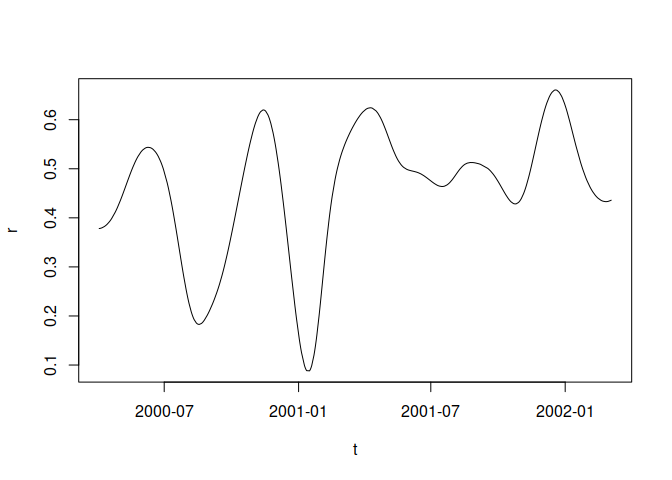
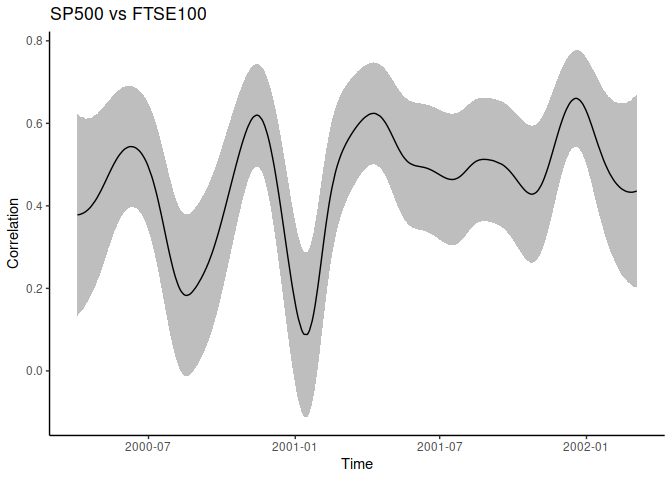
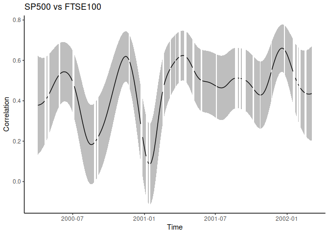
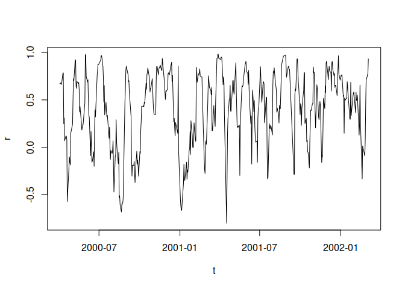

This R package aims at computing the correlation between 2 time-series following the method described in the following paper:
Choi, JE., Shin, D.W. Nonparametric estimation of time varying correlation coefficient. J. Korean Stat. Soc. 50, 333–353 (2021). https://doi.org/10.1007/s42952-020-00073-6
The chief idea is to perform a non-parametric kernel smoothing (using a common bandwidth) of all underlying components required for the computation of a correlation coefficient (i.e., x, y, x2, y2, x * y).
The automatic selection procedure for the bandwidth parameter proposed in the paper is implemented in this package. The same goes for the computation of confidence intervals.
We also implemented the possibility to use Epanechnikov, Gaussian, or box kernels, as well as to estimate either the Pearson or the Spearman correlation coefficient.
Installation
You can install the development version of timevarcorr from GitHub with:
# install.packages("remotes") ## uncomment and run if you don't have this package installed
remotes::install_github("courtiol/timevarcorr")That should suffice!
Note that this package relies so far on only one direct dependency – lpridge – which itself depends on nothing but a plain R install.
Nonetheless, in some of the examples below, we also rely on the tidyverse ecosystem, so you would need to install this as well to reproduce the content of this README:
install.packages("tidyverse")Examples
The main function of this package is called tcor and its documentation is available here:
help(tcor, package = timevarcorr)Here is a very simple example using base-R syntax:
library(timevarcorr)
#> timevarcorr loaded; type ?tcor for help on this package.
d <- stockprice[1:500, ]
example1 <- with(d, tcor(x = SP500, y = FTSE100, t = DateID, kernel = "normal"))
#>
#> You may set `nb.cores` to a number higher than 1 for faster computation.
#> [1] "h selected using LOO-CV = 60.9"
plot(example1, type = "l")
Here is the same example using tidyverse syntax (with confidence interval):
library(tidyverse)
d |>
summarise(tcor(x = SP500, y = FTSE100, t = DateID,
kernel = "normal", CI = TRUE)) |>
ggplot() +
aes(x = t, y = r, ymin = lwr, ymax = upr) +
geom_ribbon(fill = "grey") +
geom_line() +
labs(title = "SP500 vs FTSE100", x = "Time", y = "Correlation") +
theme_classic()
#> [1] "h selected using LOO-CV = 60.9"
And now, the same example showing gaps of observations in the time series:
d |>
summarise(tcor(x = SP500, y = FTSE100, t = DateID,
kernel = "normal", CI = TRUE, keep.missing = TRUE)) |>
ggplot() +
aes(x = t, y = r, ymin = lwr, ymax = upr) +
geom_ribbon(fill = "grey") +
geom_line() +
labs(title = "SP500 vs FTSE100", x = "Time", y = "Correlation") +
theme_classic()
#>
#> You may set `nb.cores` to a number higher than 1 for faster computation.
#> [1] "h selected using LOO-CV = 60.9"
You can do more. For example, you can use other kernels, fix the bandwidth manually, or use the Spearman’s rather than the Pearson’s correlation coefficient:
example2 <- with(d, tcor(x = SP500, y = FTSE100, t = DateID,
cor.method = "spearman", kernel = "box", h = 10))
plot(example2, type = "l")
You can also test the difference in correlation coefficients between two time points:
example3 <- with(d, tcor(x = SP500, y = FTSE100, t = DateID, kernel = "normal", CI = TRUE))
#>
#> You may set `nb.cores` to a number higher than 1 for faster computation.
#> [1] "h selected using LOO-CV = 60.9"
equality_test(example3, t1 = "2000-05-02", t2 = "2001-05-02")
#> t1 r1 t2 r2 delta_r SE_delta_r T_stat df
#> 1 2000-05-02 0.4354486 2001-05-02 0.5721993 0.1367507 0.1224749 1.116561 910
#> p
#> 1 0.2644768Or you can test if specific time points (or all) differ from a reference value:
ref_test(example3, t = c("2000-05-02", "2001-05-02"), r_ref = 0.5)
#> t r r_ref delta_r SE_delta_r T_stat df p
#> 1 2000-05-02 0.4354486 0.5 -0.06455140 0.10082726 -0.6402177 910 0.5221922
#> 2 2001-05-02 0.5721993 0.5 0.07219934 0.06952677 1.0384394 910 0.2993414
#> p_adjustment
#> 1 none
#> 2 noneDevel corner
This README file has been compiled using devtools::build_readme(), with the following setup:
devtools::session_info()
#> ─ Session info ───────────────────────────────────────────────────────────────
#> setting value
#> version R version 4.3.1 (2023-06-16)
#> os Ubuntu 22.04.3 LTS
#> system x86_64, linux-gnu
#> ui X11
#> language (EN)
#> collate en_US.UTF-8
#> ctype en_US.UTF-8
#> tz Europe/Berlin
#> date 2023-11-04
#> pandoc 3.1.8 @ /usr/lib/rstudio/resources/app/bin/quarto/bin/tools/x86_64/ (via rmarkdown)
#>
#> ─ Packages ───────────────────────────────────────────────────────────────────
#> package * version date (UTC) lib source
#> cachem 1.0.8 2023-05-01 [4] RSPM (R 4.2.0)
#> callr 3.7.3 2022-11-02 [4] RSPM (R 4.2.0)
#> cli 3.6.1 2023-03-23 [4] RSPM (R 4.2.0)
#> colorspace 2.1-0 2023-01-23 [4] RSPM (R 4.2.0)
#> crayon 1.5.2 2022-09-29 [4] RSPM (R 4.2.0)
#> devtools 2.4.5 2022-10-11 [4] RSPM (R 4.2.0)
#> digest 0.6.33 2023-07-07 [4] RSPM (R 4.2.0)
#> dplyr * 1.1.3 2023-09-03 [4] RSPM (R 4.3.0)
#> ellipsis 0.3.2 2021-04-29 [4] RSPM (R 4.2.0)
#> evaluate 0.23 2023-11-01 [4] RSPM (R 4.3.0)
#> fansi 1.0.5 2023-10-08 [4] RSPM (R 4.3.0)
#> farver 2.1.1 2022-07-06 [4] RSPM (R 4.2.0)
#> fastmap 1.1.1 2023-02-24 [4] RSPM (R 4.2.0)
#> forcats * 1.0.0 2023-01-29 [4] RSPM (R 4.2.0)
#> fs 1.6.3 2023-07-20 [4] RSPM (R 4.2.0)
#> generics 0.1.3 2022-07-05 [4] RSPM (R 4.2.0)
#> ggplot2 * 3.4.4 2023-10-12 [4] RSPM (R 4.3.0)
#> glue 1.6.2 2022-02-24 [4] RSPM (R 4.2.0)
#> gtable 0.3.4 2023-08-21 [4] RSPM (R 4.2.0)
#> highr 0.10 2022-12-22 [4] RSPM (R 4.2.0)
#> hms 1.1.3 2023-03-21 [4] RSPM (R 4.2.0)
#> htmltools 0.5.6.1 2023-10-06 [4] RSPM (R 4.3.0)
#> htmlwidgets 1.6.2 2023-03-17 [4] RSPM (R 4.2.0)
#> httpuv 1.6.12 2023-10-23 [4] RSPM (R 4.3.0)
#> knitr 1.45 2023-10-30 [4] RSPM (R 4.3.0)
#> labeling 0.4.3 2023-08-29 [4] RSPM (R 4.2.0)
#> later 1.3.1 2023-05-02 [4] RSPM (R 4.2.0)
#> lifecycle 1.0.3 2022-10-07 [4] RSPM (R 4.2.0)
#> lubridate * 1.9.3 2023-09-27 [4] RSPM (R 4.3.0)
#> magrittr 2.0.3 2022-03-30 [4] RSPM (R 4.2.0)
#> memoise 2.0.1 2021-11-26 [4] RSPM (R 4.2.0)
#> mime 0.12 2021-09-28 [4] RSPM (R 4.2.0)
#> miniUI 0.1.1.1 2018-05-18 [4] RSPM (R 4.2.0)
#> munsell 0.5.0 2018-06-12 [4] RSPM (R 4.2.0)
#> pillar 1.9.0 2023-03-22 [4] RSPM (R 4.2.0)
#> pkgbuild 1.4.2 2023-06-26 [4] RSPM (R 4.2.0)
#> pkgconfig 2.0.3 2019-09-22 [4] RSPM (R 4.2.0)
#> pkgload 1.3.3 2023-09-22 [4] RSPM (R 4.3.0)
#> prettyunits 1.2.0 2023-09-24 [4] RSPM (R 4.3.0)
#> processx 3.8.2 2023-06-30 [4] RSPM (R 4.2.0)
#> profvis 0.3.8 2023-05-02 [4] RSPM (R 4.2.0)
#> promises 1.2.1 2023-08-10 [4] RSPM (R 4.2.0)
#> ps 1.7.5 2023-04-18 [4] RSPM (R 4.3.0)
#> purrr * 1.0.2 2023-08-10 [4] RSPM (R 4.2.0)
#> R6 2.5.1 2021-08-19 [4] RSPM (R 4.2.0)
#> Rcpp 1.0.11 2023-07-06 [4] RSPM (R 4.2.0)
#> readr * 2.1.4 2023-02-10 [4] RSPM (R 4.2.0)
#> remotes 2.4.2.1 2023-07-18 [4] RSPM (R 4.2.0)
#> rlang 1.1.1 2023-04-28 [4] RSPM (R 4.2.0)
#> rmarkdown 2.25 2023-09-18 [4] RSPM (R 4.3.0)
#> rstudioapi 0.15.0 2023-07-07 [4] RSPM (R 4.2.0)
#> scales 1.2.1 2022-08-20 [4] RSPM (R 4.2.0)
#> sessioninfo 1.2.2 2021-12-06 [4] RSPM (R 4.2.0)
#> shiny 1.7.5.1 2023-10-14 [4] RSPM (R 4.3.0)
#> stringi 1.7.12 2023-01-11 [4] RSPM (R 4.2.0)
#> stringr * 1.5.0 2022-12-02 [4] RSPM (R 4.2.0)
#> tibble * 3.2.1 2023-03-20 [4] RSPM (R 4.3.0)
#> tidyr * 1.3.0 2023-01-24 [4] RSPM (R 4.2.0)
#> tidyselect 1.2.0 2022-10-10 [4] RSPM (R 4.2.0)
#> tidyverse * 2.0.0 2023-02-22 [4] RSPM (R 4.2.0)
#> timechange 0.2.0 2023-01-11 [4] RSPM (R 4.2.0)
#> timevarcorr * 0.0.0.9006 2023-11-04 [1] local
#> tzdb 0.4.0 2023-05-12 [4] RSPM (R 4.2.0)
#> urlchecker 1.0.1 2021-11-30 [4] RSPM (R 4.2.0)
#> usethis 2.2.2 2023-07-06 [4] RSPM (R 4.2.0)
#> utf8 1.2.4 2023-10-22 [4] RSPM (R 4.3.0)
#> vctrs 0.6.4 2023-10-12 [4] RSPM (R 4.3.0)
#> withr 2.5.2 2023-10-30 [4] RSPM (R 4.3.0)
#> xfun 0.41 2023-11-01 [4] RSPM (R 4.3.0)
#> xtable 1.8-4 2019-04-21 [4] RSPM (R 4.2.0)
#> yaml 2.3.7 2023-01-23 [4] RSPM (R 4.2.0)
#>
#> [1] /tmp/RtmpkQQ6YK/temp_libpathd403f4af7a494
#> [2] /home/courtiol/R/x86_64-pc-linux-gnu-library/4.3
#> [3] /usr/local/lib/R/site-library
#> [4] /usr/lib/R/site-library
#> [5] /usr/lib/R/library
#>
#> ──────────────────────────────────────────────────────────────────────────────